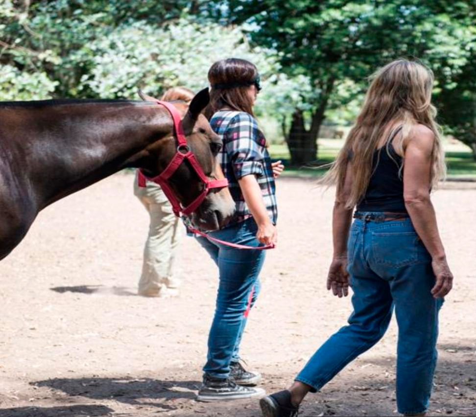

Somos la frecuencia donde
el dato y la naturaleza se encuentran.
Desde hace más de dos décadas acompañamos a líderes y organizaciones a alinear el ser, la tarea y los vínculos, convirtiendo la intuición estratégica en sistemas medibles que se autorregulan.
Del insight al estado alfa:
una evolución, no una fórmula.
Alfalógica
Alfalógica nació en la investigación de insights: escuchar con rigor lo que un mercado, un equipo o un líder todavía no sabía decir de sí mismo. Con los años, esa escucha se volvió acción — el estado alfa, el punto donde la evidencia y la intuición dejan de competir y empiezan a decidir juntas. En el camino sumamos herramientas nuevas, afinamos nuestro criterio en industrias muy distintas entre sí, incorporamos tecnología de punta y convertimos cada aprendizaje en método. No partimos de una fórmula: la construimos, y la seguimos construyendo con cada organización que acompañamos.
Mariana Bunge
Empecé escuchando insights — lo que la gente no decía en voz alta, pero que definía todo. Con el tiempo aprendí que escuchar no alcanza: hay que animarse a actuar desde ahí, en estado alfa. Soy Licenciada en Administración de Empresas, con un Máster en Negocios y Economía y una sólida trayectoria en investigación de mercado. Siempre me apasionó el cruce entre el rigor estratégico de los negocios y la dinámica del comportamiento humano. Hoy acompaño a fundadores, directores y a sus equipos a destrabar bloqueos organizacionales complejos —interviniendo primero en la mentalidad del líder y luego en la dinámica colectiva— integrando coaching consciente y neuroliderazgo (Fred Kofman, NeuroLeadership Institute), constelaciones organizacionales certificadas por Naser University, y marcos de agilidad e innovación (Kleer, IAE Business School). El diferencial: potencio todo esto con dinámicas híbridas y lúdicas —juego serio, trabajo en la naturaleza con personas, animales y objetos, y tecnología combinada—, porque romper las barreras de un equipo jugando es, en mi experiencia, lo que hace emerger el insight estratégico más rápido.
Cinco principios de
excelencia estratégica.
Las convicciones que guían cada intervención que diseñamos.
Orden y planificación estratégica
Sistemas alineados que garantizan un flujo operativo eficiente. La estructura no es rigidez: es el cauce que permite a la energía moverse con propósito.
Innovación metodológica
Marcos ágiles —Scrum, Lean, Design Thinking— como procesos vivos que se adaptan a tu cultura, no plantillas impuestas. La innovación es consecuencia natural de un sistema consciente.
Coherencia y autorregulación
Estructuras capaces de autorregularse y prosperar en la alta complejidad. Un sistema sano corrige su rumbo antes de que la crisis lo obligue.
Tecnología con propósito
El dato valida la intuición; herramientas que escalan el propósito humano en vez de reemplazarlo. El número confirma lo que la presencia ya intuye.
Visión sistémica integral
El cambio efectivo es la alineación de todos los componentes del sistema: el ser, la tarea y los vínculos moviéndose como uno.
La naturaleza es el espejo de
la verdad organizacional.
Trabajamos en entornos de naturaleza y con el apoyo de caballos, seres que leen la intención antes que las palabras. Lo que un equipo esconde en la sala de reuniones, el campo lo revela en minutos.
Desde esa claridad construimos sistemas guiados por datos, porque la intuición señala la dirección, pero el número confirma el camino.
